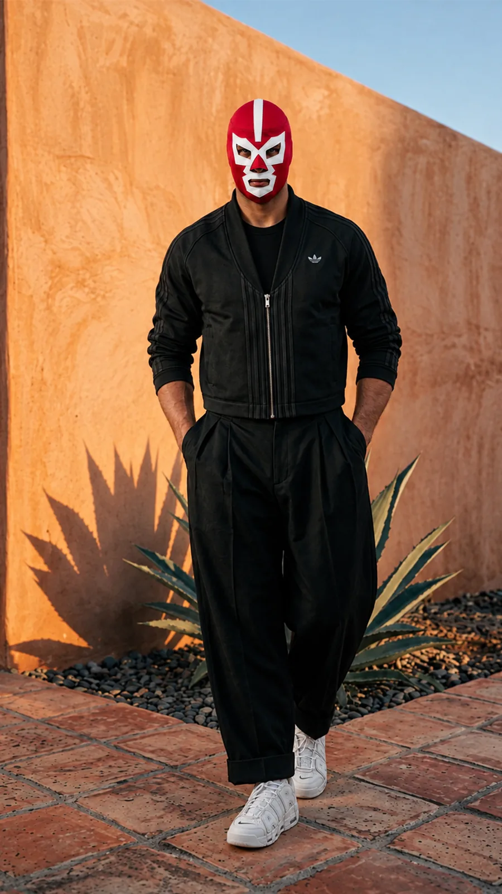
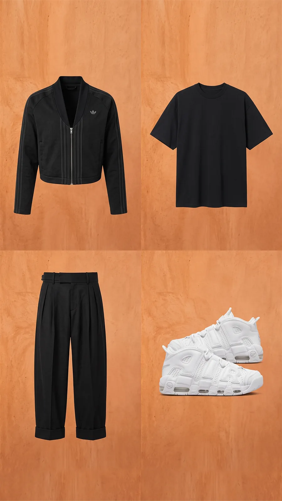
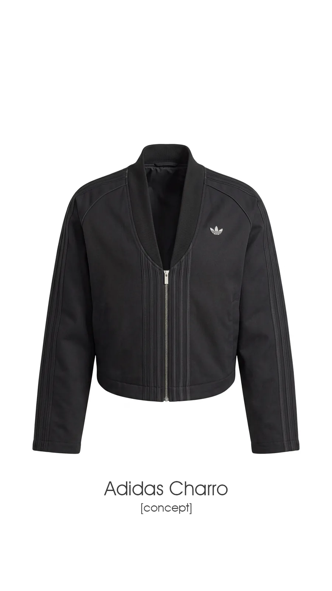
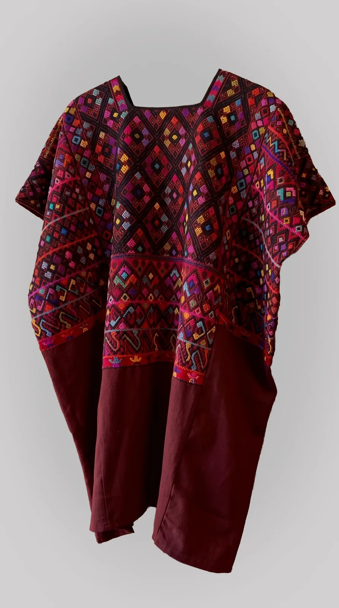
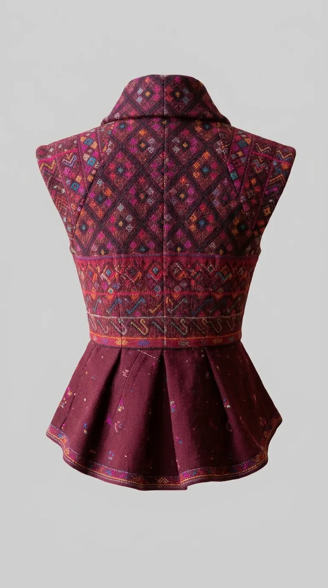
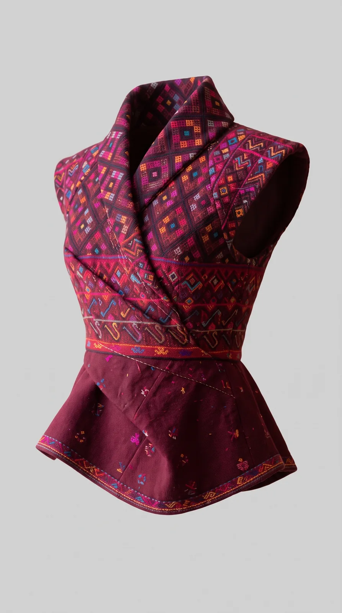
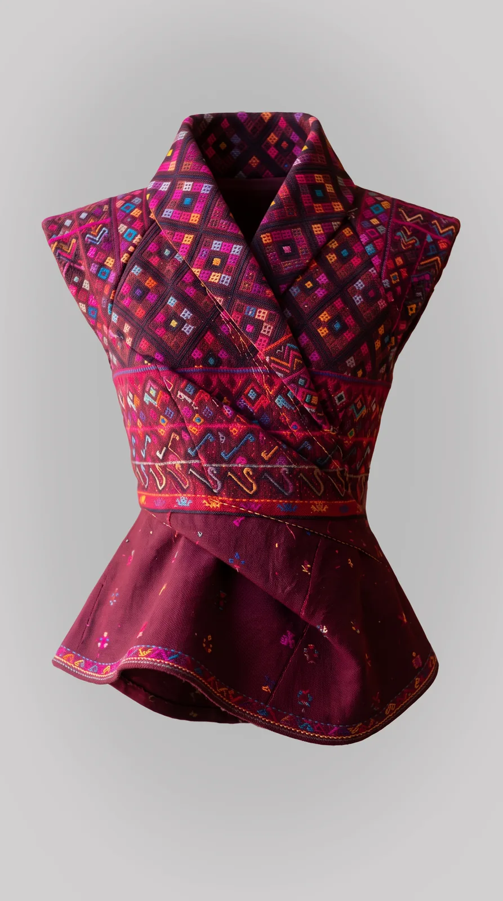

Trailers, scenes and campaigns for films that never existed.
Never Was Studios is my channel for generative AI experiments, organized by universe. The first one follows a Mexican luchador trained in Japan, in a story that borrows the look of Gabriel Figueroa and Akira Kurosawa. The channel speaks English; the aesthetic is Mexican with a Japanese edge.
It went live on Instagram in October 2026 with 15 second teasers: action scenes and the character presenting outfits, building toward the trailer of a film that was never shot. Every video gets its own song, and a new universe starts roughly every month.
Still
to Reel
Every piece runs through the same pipeline. A still fixes the look, the still drives the video generation, and the edit turns short generated clips into a reel with its own soundtrack.

The Mask
Stays On
The hero has no name. He never takes off his luchador mask and nobody asks why: it is his face and it isn’t. He is Mexican, trained in Japan at some unknown time, a charro who takes work as a jornalero. Between the action scenes he presents outfits, like a lookbook for a film that does not exist.
The character sheet keeps every generation on model: the same mask, the same silhouette, the same palette, whatever the tool.


Three
Teasers
El Samurái Enmascarado, the film that was never shot: a romantic hero, very good against very bad, in black and white that borrows from Gabriel Figueroa and Akira Kurosawa. Each teaser introduces one piece of the canon, cut in Premiere Pro to its own Suno track.
The charro stands alone against a line of riders. The luchador draws his katana in a gi. Lucida Magenta, the true heroine, a ninja whose training is never explained, walks among the jornaleros in a black samurai outfit, a shot that takes its reference from Tina Modotti’s Workers’ Parade.
Huipil,
Recut
A brocade huipil reworked as a tailored peplum vest with a shawl collar. I fixed the garment first as product plates from three angles, then styled it on a model against minimal architecture, so the textile reads the same in every frame.




One Song
Per Piece
Each piece gets its own track generated in Suno, so no two reels share a soundtrack. Every style brief mixes genres that should not meet: mariachi brass with dubstep, fuzz guitar with megaphone vocals, acid bass with funk. A soundtrack week on SoundCloud is planned.
3:48
Off beat reggae synth chords, a strutting drum beat, deep tuba bass and mariachi trumpet stabs, building into a dubstep drop where the wobble bass turns into tuba blasts.
2:59
Explosive fuzz guitar, chaotic slap bass and distorted megaphone vocals over war drums, building to a screamed outro and a lone bass thud.
2:13
Heavy drums and squelching acid bass with funk notes on top, a bridge that drops the tempo into a strange funk groove, then a frantic return.
2:58
A galloping drum beat and distorted bass revving like an engine, fuzz guitar, slap bass and megaphone shouting, ending in feedback and a single snare crack.
Stills, clips, reels and stories are all made vertical for Instagram.
Generated clips, stories and the final edits share one frame rate.
Teasers publishing on Instagram, building toward the first trailer.
Canon
Before Prompts
What Went Well?
Rules First, Generations SecondWriting the canon before any prompt gave every generation something to be checked against. The mask never comes off, so a take where it slips is out, whatever else it gets right.
What Could I Have Done Better?
Plan the Shot Before Spending ItVideo generations are the scarce resource: each account gives three Gemini videos a day. I now set the final intent of a piece first and budget two to three iterations per reel, instead of iterating on screen.